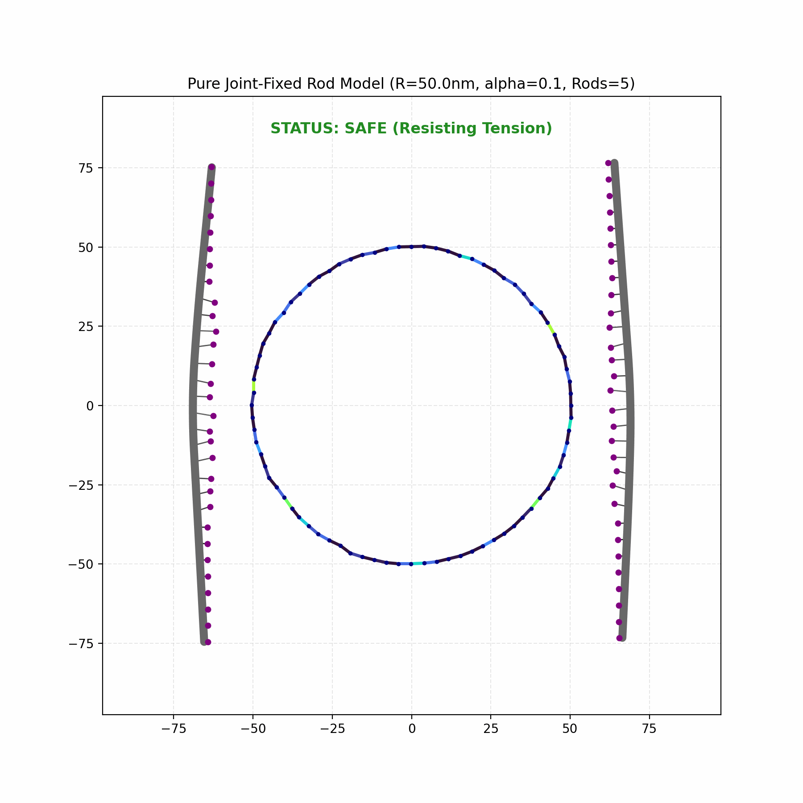
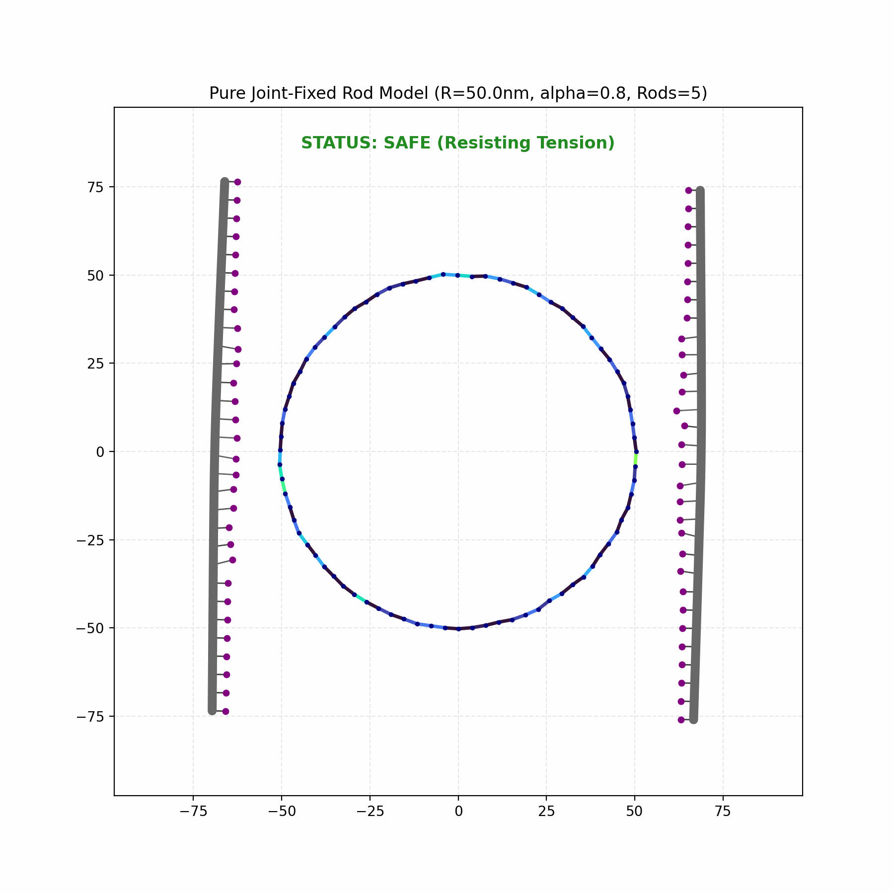
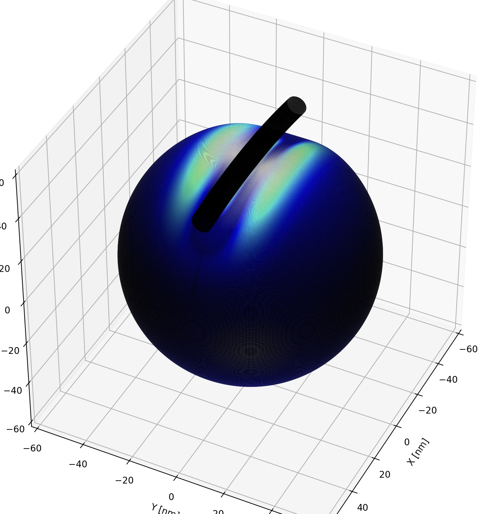
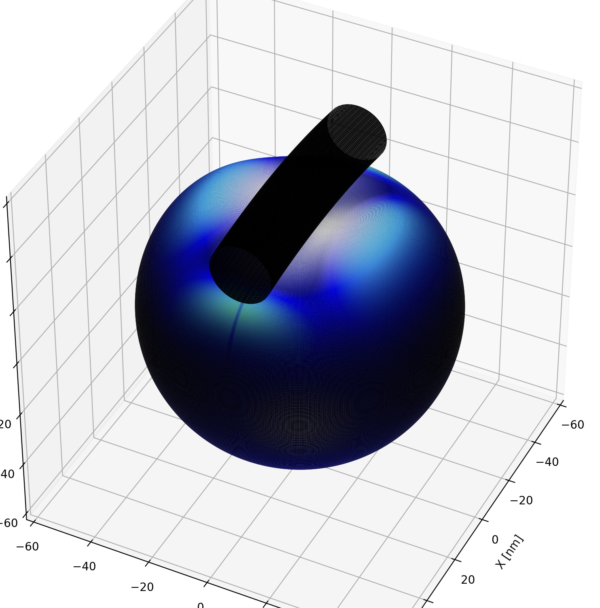

SIMULATION
1. Membrane Disruption
1.1 MD-CG Simulation in 2D Environment
To understand how DNA bundles deform and rupture extracellular vesicle (EV) membranes, we established a two-dimensional coarse-grained molecular dynamics (CG-MD) simulation. This cross-sectional model lets us examine the competition between DNA-bundle bending stiffness and lipid-membrane elasticity. The model represents groups of atoms as single beads and includes the DNA bundle, cholesterol anchors, flexible linkers, and the EV membrane lipid bilayer, enabling large-scale structural dynamics to be observed over extended timescales.
Detailed Theory & Parameter Settings
The dynamics of this system are governed by several key biophysical models. To implicitly account for the aqueous solvent environment without rendering every water molecule, the motion of each bead is calculated using Langevin dynamics:
mi dvi/dt = −γivi + FiC + FiR
Here, mi and vi represent the mass and velocity of particle i, and γi is the friction coefficient of the solvent. The forces are divided into inter-particle conservative forces (FiC) and a stochastic Gaussian noise term (FiR) representing thermal fluctuations (Brownian motion).
The behavior of the EV membrane is based on Helfrich's continuum elastic theory, where the bending energy of the lipid bilayer is primarily determined by its bending modulus (κ) and curvature. In our CG model, this macroscopic elasticity is approximated by tuning the angular and dihedral potentials between the lipid beads.
To connect the DNA bundle to the membrane via cholesterol, we utilized the Finitely Extensible Nonlinear Elastic (FENE) potential for the linker molecules:
VFENE(r) = −½ KR02 ln[1 − (r/R0)2]
This ensures that the linker acts as a harmonic spring at equilibrium distances but cannot extend beyond a critical maximum length (R0), accurately reflecting the physical constraints of polymer chains.
The critical parameter in this model is the bending stiffness (EI) of the DNA bundle. Based on composite beam mechanics, this stiffness is determined by the number of DNA double helices (N) and the crosslinking efficiency (α, ranging from 0 to 1). When α = 0 (no crosslinks), the stiffness scales with N. When perfectly crosslinked (α = 1), the stiffness scales with N2. We translated this macroscopic effective stiffness into the angular spring constant (Kθ) between the DNA beads in our simulation, allowing us to test how structural rigidity affects the membrane.
DNA Bundle Rigidity
DNA-bundle bending stiffness determines how strongly the bundle resists conforming to the membrane. Comparing low- and high-rigidity conditions shows how that mechanical response affects membrane deformation and rupture.

Low rigidity: membrane rupture is not observed in the simulation. The more flexible bundle deforms along with the membrane instead of concentrating enough stress to disrupt it.

High rigidity: membrane rupture is observed in the simulation. The stiffer bundle resists bending and concentrates mechanical stress on the membrane.
Together, these simulations illustrate how DNA-bundle rigidity can affect the membrane response and whether rupture occurs under the modeled conditions.
1.2 3D Thermodynamic Simulation
To accurately investigate the conditions required for membrane disruption, we performed a 3D thermodynamic stabilization calculation. The primary reason for adopting this approach is that it allows us to visualize the thermodynamically stable positions of the DNA bundle and the liposome in a static system, enabling detailed observation of the stereoscopic deformation process. Furthermore, by establishing a critical curvature limit, we can effectively determine whether the membrane will rupture, making it a powerful method for exploring the exact conditions of membrane disruption. In our modeling, we established a system that finds the equilibrium state by minimizing the total free energy, which consists of the membrane's bending and tension energies, the DNA's bending energy, and the adhesion energy from the cholesterol anchors.
Theoretical Framework & Thermodynamic Parameters
Our calculation is strictly based on established physical principles: the Canham-Helfrich theory for evaluating the membrane's bending energy cost, and the Euler-Bernoulli beam theory for defining the DNA bundle's bending elasticity. To find the most stable shape, we utilized an optimization algorithm to minimize the total free energy. For the specific parameters, we set the initial liposome radius to 50 nm, the membrane bending modulus to 20 kBT, and the adhesion energy per cholesterol molecule to 4.5 kBT. Crucially, based on our prior physical models, we defined the critical average curvature for membrane rupture as 0.067 nm-1.
Modeling Objectives & Structural Scale
The model finds the thermodynamically stable configuration by minimizing the total free energy contributed by membrane bending and tension, DNA bending, and cholesterol-anchor adhesion. Establishing a critical average curvature of 0.067 nm-1 provides a threshold for determining whether the membrane is predicted to rupture.
The membrane's bending-energy cost is evaluated using Canham-Helfrich theory, with a bending modulus of 20 kBT.
The modeled liposome has an initial radius of 50 nm. Cholesterol anchors connect the DNA bundle to the membrane, with an adhesion energy of 4.5 kBT per cholesterol molecule.
3D Dynamic Model for EV Environment
Explore the liposome model by dragging to rotate and using the viewer controls to zoom.

Deformation Analysis & Bundle Radius
[Present various modes of membrane deformation across different stiffness and radius conditions.]

Low bundle radius (r = 4 nm).

High bundle radius (r = 10 nm).
By using the L-BFGS-B optimization algorithm to solve for the equilibrium state where the membrane's elastic energy (based on Helfrich theory) competes with the DNA's bending energy (based on Euler-Bernoulli beam theory), we constructed 3D curvature heatmaps. This spatially proved that when a highly rigid, straight DNA bundle adheres to a liposome, the membrane is sharply folded at the bundle's edges, causing extreme stress concentration.
Subsequent parameter exploration revealed that not only the "bending rigidity" but also the "bundle radius (thickness)" is crucial for membrane rupture. While increased rigidity severely distorts the membrane, a thicker bundle spreads the stress laterally due to a wider contact area, thereby reducing local curvature. Since both of these physical scalings depend directly on the number of bundled DNA strands (N), we reasoned that we could theoretically calculate the minimum number of strands required to disrupt the membrane.
Minimum Bundle Requirements & Cross-linking Efficiency
We performed a 2D scaling analysis, plotting the number of strands (N) on the X-axis against the maximum membrane curvature (Hmax) on the Y-axis. Assuming an ideal rigid DNA bundle (cross-linking efficiency α = 1.0), the bundle's radius is calculated as r ≈ 1.25√N, and its bending rigidity increases proportionally to the square of the number of strands, B ∝ α · N2. When these parameters are fed back into our 3D stabilization simulation, the curvature initially spikes due to the explosive increase in rigidity, but eventually, the stress dispersion from the increasing radius takes over, creating a "convex saturation curve." In this calculation, the curve breached the critical membrane rupture threshold (0.067 nm−1) at approximately 6 DNA helices. This quantitatively demonstrates that under ideal, perfectly cross-linked conditions, a minimum of 6 DNA strands is required to initiate membrane disruption.


1.3 GUV Environment
While the ultimate target of this project is extracellular vesicles (EVs), laboratory validation experiments utilize giant unilamellar vesicles (GUVs, radius r ≥ 300 nm). We therefore adapted both 2D and 3D simulation models to examine bundle behavior on large-diameter GUVs.
2D Simulation on GUV
[Add caption: Due to large GUV size, standard bundle attachment fails to induce critical curvature.]
[Add caption: Extending the linker improved membrane contact and increased local bending stress.]
Observation: Because the vesicle diameter is substantially larger than EV scales, disruption could not be triggered under standard parameters; however, elongating the linker attachment enhanced membrane deformation.
3D Simulation on GUV
[Add caption: Testing high-helix bundles against GUV membrane curvature.]
[Add caption: Cross-sectional wrapping profile on large-scale membrane.]
Observation: 3D simulations similarly confirmed that even when increasing helix count significantly, complete rupture of GUVs remains extremely challenging solely through mechanical bundling, emphasizing the distinct physics between small EVs and giant vesicles.
2. Design and Thermodynamic Validation of 6-Helix Bundle HCR Sequences
To achieve programmable and stimuli-responsive bundle assembly, we computationally designed and thermodynamically evaluated the DNA sequences for the 6-Helix Bundle HCR system.
2.1 Sequence Design Conditions
The DNA sequences for the 6-Helix Bundle HCR system (seeds S1-S6 and hairpins H1-H6) were computationally optimized using NUPACK to eliminate unintended leak reactions and structural defects. Strict physical constraints were applied during the design process:
- Complete elimination of ≥4-nt palindromes and homopolymers.
- Enforcement of sequence diversity, requiring all four nucleobases (A, T, G, C) to be present within any 7-nt window to prevent local GC-bias.
- Multi-tube optimization (
max_size=2) to rigorously suppress homodimerization and non-specific crosstalk between domains.
2.2 Thermodynamic Feasibility of the HCR Cascade
Thermodynamic simulations at 25°C confirmed the high structural integrity and reactivity of the designed system. In isolation, the hairpin strands strongly favor the target double-hairpin monomer state, with dimerization rates suppressed to near zero (<0.1%). Furthermore, the hybridization chain reaction is thermodynamically highly favorable; every sequential binding step in the cascade yields a substantial negative Gibbs free energy change (ΔG ≪ 0). This steep “energy cascade” ensures that the self-assembly into the final 6-Helix Bundle proceeds spontaneously, rapidly, and irreversibly upon trigger initiation.